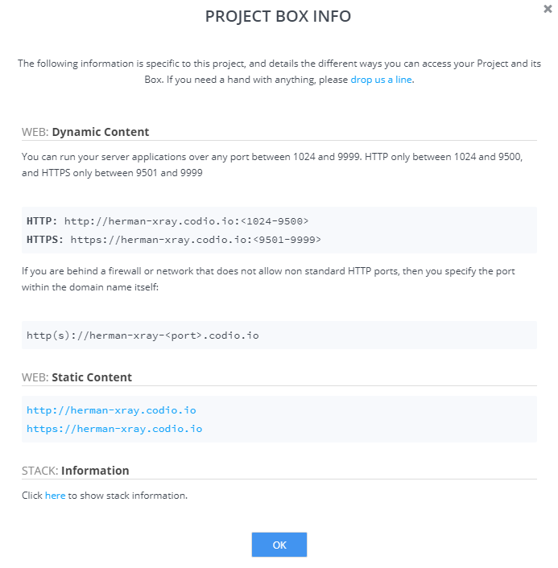
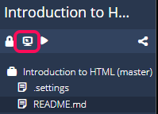
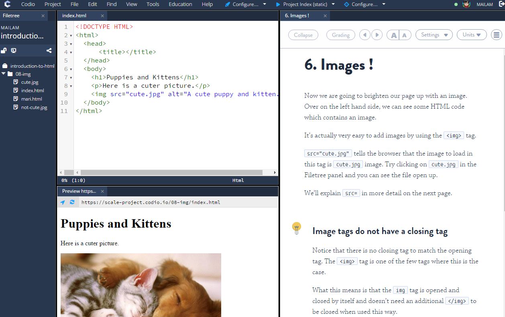
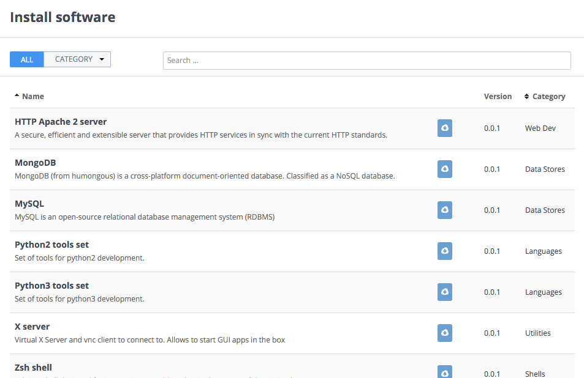
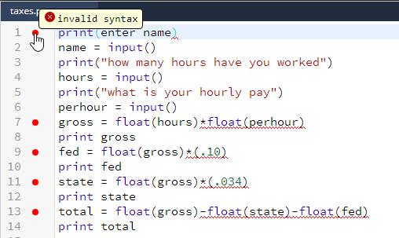
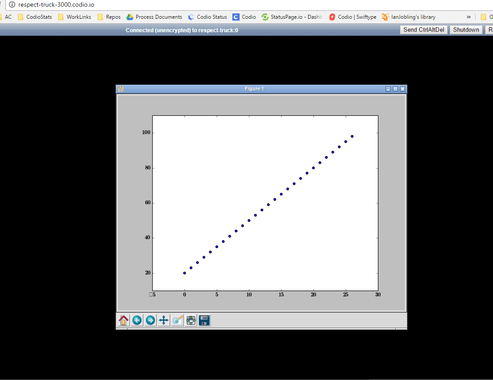
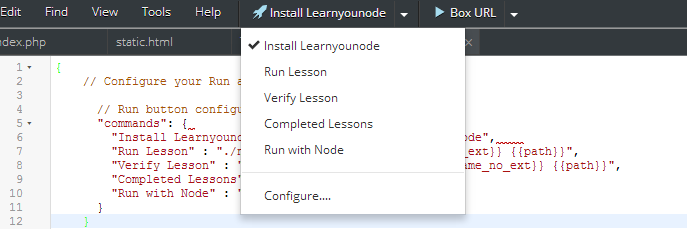

Each Codio Project gets its own dedicated Ubuntu Server (Box). This chapter contains important information on accessing your box, how to administer it and how to install software dependencies.
Details of your project Box can be found by opening the Project > Box Info menu item, where information of your project URL(s) can be viewed.

Overview
Waking a Box
When you create a Codio Project, it is automatically assigned an Ubuntu server. You can think of this server as being asleep until you open up your Project in the IDE. As soon as the Project loads in the IDE, the Box is up and running.
When is the Server put back to sleep?
Your server is put to sleep within a few minutes of you exiting your Project or after 60mins of inactivity.
Can I have my Box 'Always on'?
Paid subscribers can use the Always On Boxes feature. This allows you to mark Projects that you don't want to be put to sleep when you exit your Project.
Can I SSH into my Box?
Yes, see SSH into your box documentation.
Can I reboot my Box?
Yes. Please refer to the Restart and Reset documentation.
Can I let other people administer my Box?
Paid subscribers can use the Admin property of the Permissions feature to allow other Codio users to access their Project and have full access to your Codio Box as well as the code.
Do I have sudo access?
Yes, our Boxes provide sudo access.
How do I install software dependencies?
You have sudo access, so should use the full power of the apt package management system, and the packages it provides via the Ubuntu community.
How do I access my Box from code?
We have full documentation on how to access your Box from code.
Firewall issues
Codio Boxes do not run on port 80. Some companies block outbound access to ports other than port 80. Please read this section on how to work around this.
Important 'localhost' configuration information
In many config files on your Box you would include a reference to 127.0.0.1 to access localhost. Please be sure to use 0.0.0.0 instead.
Terminal window
You can access the Terminal window
- from the Tools->Terminal menu item
- or by pressing the terminal icon in the bar at the top of the file tree.

This will open up a terminal window in a new IDE panel. You can have multiple terminals open simultaneously.
Note that you can create tabs and panels anywhere you like using Codio's Panels and Tabs features.

Terminal Settings
You can modify various Terminal settings from the Codio->Preferences menu.
The available settings (and their defaults) are listed below. Preferences can be modified at the User level as described here. You can also force settings at the Project level but these will then override for all users looking at this project, so should be used sparingly.
[terminal]
;Font size.
; Type: int
font_size = 12
;Terminal theme.
; Type: string
theme = dark
;Number of lines available in the scroll history.
; Type: int
scrollback = 3000
;Quick Connect
; Type: hotkey
show-connect-dialog =
;Connections Manager
; Type: hotkey
show-connections-manager =
;Terminal. SSH connection to the box
; Type: hotkey
backend-connection = Shift+Alt+T
Accessing boxes and ports
When Codio creates a new project, it will generate a unique subdomain name
word1-word2.codio.io
where word1 and word2 are randomly generated words resulting in a unique domain name.
Recommended approach to port addressing
It is strongly recommended that you reference a Codio box running on a specific port using
word1-word2-3000.codio.io
If your PC is behind a firewall, access to external ports are often restricted. Using the recommended approach, the request will be made over port 80 and so will not be blocked by the firewall.
This approach allows both HTTP and HTTPS access over the full range of ports, 1024 to 9999.
Standard port addressing
You can also reference a Codio box using word1-word2-<port>.codio.io. This approach will work but be aware:
- Port ranges are restricted to
1024to9499for HTTP access - Port ranges are restricted to
9500to9999for HTTPS access - If the PC you are working on is behind a firewall and it blocks access over non-standard ports, it will fail if it references a box using
word1-word2-3000.codio.io - You may waste your time and potentially your sysadmin's time trying to diagnose why your browser will not talk to the Codio box.
Original Request Header
Should you need it, the X_FORWARDED_PROTO header contains original request schema.
Preview Menu
Codio offers a fully customizable Preview menu so you can preview both static files (.html) and server side files (.php files, Ruby and Node apps etc.) with a single click.
This feature lets you set up any number of 'aliases' both for static files and Box cli commands.
Preinstalled software packages
When you create an empty Box, you get a standard Ubuntu installation. Currently, we also add the following software automatically
- Git
If you want to have more software installed by default then you should use Stacks or select one of the standard stacks from the New Project screen.
Please refer to the Installing software packages section for details on how to install many other languages, database, web servers and other system components.
File & software locations
All Codio code workspace and software dependency files are located in the /home/codio folder, also reachable as ~.
Everything below this level can be accessed and is effectively read-only. You should not change anything here as it will not persist.
Software that you install from the command line or using Install Software will be installed in the usual location for an Ubuntu server.
Code workspace files
The code workspace you see in the project file tree is located at /home/codio/workspace or ~/workspace.
Installing software packages
The Tools->Install Software menu option gives you access to a dialog driven means of running scripts that can install, configure or reconfigure software components. This saves you the trouble of doing this manually from the command line.

On this page, you can locate the software you want to install and then click the install icon to start the installation.
Installing from the command line
Our boxes provide full sudo (root) access, so you can also use the Ubuntu apt package manager, which provides thousands of software packages that are maintained by the Ubuntu community.
If you want to provide fully pre-configured boxes then you should use Stacks rather than the Install Software feature described on this page.
Adding or requesting new packages
As of May 2016 the list of available packages is somewhat limited. However, we will be adding to these continuously and we also encourage you to request new ones.
If you require a new script to be added to the Install Software list then you have two options.
- Visit the Issues page on our GitHub repository and create a new issue detailing your requirements.
- You can fork our GitHub repository, add the script yourself and then submit a pull request.
Instructions on how to add your own package scripts can be found here.
Autostarting
Services that require to be started will auto start on installation.
You can manually start, stop and restart services using the following terminal commands:
$ sudo service <package-name> start
$ sudo service <package-name> stop
$ sudo service <package-name> restart
Coding installable packages
Overview
If you cannot find the software you want to install in the list then you can add your own package to the Install Software list by forking our GitHub repository, making the necessary modifications and finally submitting a pull request.
The repository can be found at https://github.com/codio/install_software
What is a script?
A script is typically, but not necessarily, a bash script that runs a series of commands as you would on the command line to install or configure software on your Codio box. However, it can be any executable code you choose.
The scripts written by Codio typically use Ansible, a very friendly deployment management system that greatly reduces complexity.
package_list.json
This is the manifest that lists the entire contents of the publicly available scripts. Each script has an entry in this file and you should add a new item.
Here's a reminder of the MySQL entry.
"mysql": {
"name": "MySQL",
"description": "MySQL is an open-source relational database management system (RDBMS)",
"script": "mysql/install.sh",
"version": "5.5.49",
"category": "data_stores"
}
Whenever a user loads the Install Software dialog, this Install Software manifest is retrieved from our GitHub repo.
script
The script is the path, relative to the root of the repo, where the installation script can be found.
category
You can specify the category that the component belongs to by updating the category field. You can choose from one of the following.
'data_stores'
'deployment'
'development_tools'
'libraries'
'shells'
'programming_languages'
'utilities'
'web_development'
Example : MySQL
The following example shows how to install MySQL from the Install Software menu in a few seconds. Try running the MySQL installation on a new box. The MySQL entry in the package_list.json file looks like this
"mysql": {
"name": "MySQL",
"description": "MySQL is an open-source relational database management system (RDBMS)",
"script": "mysql/install.sh",
"version": "5.5.49",
"category": "data_stores"
}
You can see the reference to the mysql/install.sh script.
Bash script
This script calls our standard Ansible loader script, which in turn loads the relevant playbook.
#!/bin/bash
bash -c "$(curl -fsSL https://raw.github.com/codio/install_software/master/tools/ansible.sh)" mysql
echo "Mysql password root user password is 'codio'"
Ansible playbook script
As Ansible makes installations and configurations so easy, we use this to make our lives easier. We could have accomplished the same thing within the main bash script using standard Ubuntu commands but it would be less readable and harder to maintain than using Ansible.
If you are interested in finding out more about Ansible playbooks, click here.
---
- name: Install MySQL
hosts: 127.0.0.1
sudo: True
vars:
MySQL_root_pass: codio
tasks:
- name: Set MySQL root password before installing
debconf: name='mysql-server' question='mysql-server/root_password' value='{{MySQL_root_pass | quote}}' vtype='password'
- name: Set MySQL root again password before installing
debconf: name='mysql-server' question='mysql-server/root_password_again' value='{{MySQL_root_pass | quote}}' vtype='password'
- name: Install MySQL
apt: name={{ item }} state=present
with_items:
- mysql-server
- mysql-client
- python-mysqldb
- copy: src=my.cnf dest=/home/codio/.my.cnf
Language server protocol
The Language Server protocol is used to integrate features like auto complete, go to definition, find all references.
Java, OCAML and Python are currently available.
Python Example: 
Implementing LSP support
Enable LSP support in your User (or Project) Preferences, entering
[codio-lsp]
enable_lsp_support = true
If you are authoring content for use in a course/class, we recommend enabling as a project preference as these will be applied over any preferences users may set
Installing language server protocols
To install language server protocols, go to the menu Tools->Install Software and locate the relevant component. Press the install button in the relevant row. The installation may take a few minutes and you should then Restart your Box before proceeding.
Autocomplete
Autocomplete is not automatically triggered as in HTML/CSS/JS files. To invoke autocomplete for language server protocol implemented files, use :
Mac: Shift+Space
Others: Ctrl+Space
If you wish to change the default preference to something else you can. See User Preferences for more on this
GUI based output
If you are writing or using programs that have a GUI based output then please read this section. Whether you are using UI libraries like tkinter, qt or simply ubuntu applications that have a non web based UI, this section explains how to setup a virtual desktop.
Sample Project
If you created the account for your Codio Trial account then you will find Demo GUI Output in your My Projects list. You will find instructions in the README.md file when you open the project.
If it is not there then click here to install it in your projects list. Press the Use Pack button to install.
Uses and Limitations
X Server is a virtual desktop that is very effective for Codio's cloud based infrastructure. Any application that relies on a graphical user interface has its graphical output redirected to it and Codio's viewer is then able to display the virtual desktop in a browser.
As you will see when trying out the sample applications in the demo project above, some of which have very complex UIs (notably SQLite and StartUML), you can get a very good experience indeed. The limitations start to be felt when using fast motion graphics where the virtual screen content is changing so fast that it cannot be rendered in real time over the internet. If you have better bandwidth you will experience better performance and vice-versa.
Installing your own projects
Installing X Server
To install X Server, go to the menu Tools->Install Software and locate X Server. Press the install button in the X Server row. The installation may take a few minutes and you should then Restart your Box before proceeding.
Running your code
Before you can view any output, your program needs to run, so you should first start your code. When you start the viewer (see below), the UI output will be shown automatically.

You also can start the viewer first but it will be empty until a program runs, whereupon it will refresh.
The viewer
The viewer is a special window that appears either inside Codio or in a separate browser tab. To open it, you should add "Viewer": "https://{{domain3000}}/" to the .codio file.
{
// Configure your Run and Preview buttons here.
// Run button configuration
"commands": {
"Run Python (tkinter)": "python3 tkinterpy/demo.py",
"Run Java (Lunar Phases)": "cd swing && java LunarPhases",
"SQLite Browser App": "sqlitebrowser",
"StarUML": "staruml"
},
// Preview button configuration
"preview": {
"Viewer": "https://{{domain3000}}/"
}
}
You can also access the from any browser using https://pagoda-cigar-3000.codio.io/ where you replace pagoda-cigar with your boxes domain name, which you can find in the menu at Project->Box Info (scroll to the section Web: Static content).
Customization
You can customise the X Server installation by modifying the config files in the normal way using vim or nano. For example you can
sudo vim /etc/init/openbox.confopens the openbox desktop config so you could change the default virtual desktop sizesudo vim /etc/init/novnc-3000.confwould enable you to modify the port that the viewer runs on in case it conflicts with other services you may have configured on the default port 3000
Always-on boxes
Always-On Boxes is now available for all paid subscribers. You can enable Box(es) to be Always-On. This means that it will remain active whether you are in the IDE or even logged out. If your project is archived due to inactivity (usually 30 days since last opened), this process removes it from the active fileserver and will also mean that it can no longer be 'Always-On'. The number of Always-On Boxes you can have depends on the subscription plan
Marking a Project as Always On
You can set a Box to Always-On from the Project->Settings menu if you're in the IDE. If you're in the Dashboard, select Projects to get the listing, then press the gear icon on the right side of the Project listing. You will be shown the settings screen where you can enable the Always On switch.
Keeping terminal processes running
When you exit your project in the IDE and return to the Dashboard, any processes that were started within a terminal window will terminate.
You can prevent this in one of two ways.
The simple way
One simple way to avoid this issue is to append & to the terminal command that starts your process. You will see output as usual but may need to press the enter key to get a fresh command prompt.
Then, you will need to enter the following command before you close the terminal window or exit your project and return to the dashboard.
disown -a
tmux
As an alternative, you can install tmux.
SSH and code access - Codio box SSH keys
Codio generates a key-pair that can be used for services like Github, so you can upload your public key to those systems (read this section for details on how to upload Github and Bitbucket public keys with a single button press).
You can find your Codio public key as described here.
When you create a new Codio project, your user keys are automatically copied into your project and can be found in the ~/.ssh folder. You will need to open up a Terminal window to access this folder and the keys stored in the id_rsa file.
SSH and code access -SSH into your box
Unless your project is utilising Always On Boxes you will need to open your Codio Project in order for the Box to be started and ready to receive incoming SSH connections.
Generating Key Pairs
There are several sites that explain generating SSH keys.
- Windows: http://kb.siteground.com/how_to_generate_an_ssh_key_on_windows_using_putty/. Please note that for Windows, you should generate SSH2 RSA key type
- Mac : https://help.github.com/articles/generating-ssh-keys#platform-mac
- Linux: https://help.github.com/articles/generating-ssh-keys#platform-linux
Find your local machine's SSH public Key
This is pretty easy to do. On a Mac or Linux box you can get your public key in one of two ways
- either copy your local machine's public key to the clipboard from your local machine's terminal using
pbcopy < ~/.ssh/id_rsa.pub - or on your local machine, open the file
~/.ssh/id_rsa.puband copy it to the clipboard. Be careful with some editors that include control characters that you don't want to be copied across.
On a Windows machine you'll probably be using putty, so grab your key from there.
Uploading your Public Key to your Codio Box
You need to upload the public key you just found in the above steps. Once you have it copied to the clipboard, open a terminal tab in your Codio project and enter this key into the .ssh/authorized_keys file. The easiest way to do this is to enter nano .ssh/authorized_keys which will open this file in the nano editor and you can paste it in.
You can view/check to see all/any Public key(s) you have uploaded into your project by opening the terminal and running cat ~/.ssh/authorized_keys.
Enabling and Connecting to your Box from your local machine's Terminal
- Go to Project>Settings and to the Forwarding Settings tab and click the 'Enable SSH Forwarding' button
- The connection string you need to use is shown there
You will see connection details like this
SSH Forwarding: ssh codio@forwarding.codio.com:29119
You can now connect to your Box from any Terminal window using (in the above example)
ssh codio@forwarding.codio.com -p 29119
If you get a message Permission denied (publickey) then you have not uploaded your SSH Public Key correctly.
You cannot connect to a Codio Box without using a Public Key.
IDE access permissions
By default, other users with read and write permissions are not able to access your Box from the command line.
You can grant access to other Codio users by assigning the Admin permission level. This feature requires a paid subscription.
For full details, please refer to the Permissions section of the documentation.
Auto starting services
Your Box will be put to sleep under the conditions explained here. When you open your project, the Box will start and services will start automatically.
Upstart
Codio currently uses upstart. If you want to configure services to start when your box starts up, you should configure a .conf file. If you are not familiar with upstart, please Google it for configuration details.
Important - you need to specify the user account under which the service is run using setuid codio.
Below is an example .conf file that should be located in the /etc/init folder.
# testservice - test service job file
description "Some description"
author "freddy <you@yours.com>"
# Stanzas
#
# Stanzas control when and how a process is started and stopped See a list of stanzas here:
# http://upstart.ubuntu.com/wiki/Stanzas When to start the service
start on runlevel [2345]
stop on runlevel [016]
# Automatically restart process if crashed
respawn
# Specify the user account which the service should run under testservice - test service job file
setuid codio
# Specify working directory if needed
chdir /home/codio/workspace
# Specify the process/command to start, e.g.
exec your-service-name
Restart and reset
Codio offers the ability to restart and to reset your project's Box. You can find both options in the Project menu.
Restart
This operation reboots the Box, which usually takes a few seconds.
Reset
This operation is fairly destructive and should be used with caution. It resets the Box to its fresh state but leaves your code files untouched.
- any new folders or files that have been created will be deleted
- all parts of the Box outside of the
~/workspacefolder will be reset - all code files in the
~/workspacefolder are untouched - a Box restart
After a Reset, you will need to reinstall components (npm modules, ruby gems etc.) and other modifications you may have made.
Customizable run menu
A handy feature is the ability to add commonly used commands to the Codio IDE, akin to using the alias command from the command line.
When the menu item is selected, a new terminal window will open to run the command in. You can also force the command to run in an existing terminal window as we illustrate below.
.codio file
The configuration for the Run (and Preview) button can be set by editing the .codio file in the root of your project.
The following code below shows the .codio file configured to give this Run menu

which is driven by the following .codio file
{
// Configure your Run and Preview buttons here.
// Run button configuration
"commands": {
"Install Learnyounode" : "npm install -g learnyounode",
"Run Lesson" : "./ns-executes.sh run {{filename_no_ext}} {{path}}",
"Verify Lesson" : "./ns-executes.sh verify {{filename_no_ext}} {{path}}",
"Completed Lessons" : "learnyounode",
"Run with Node" : "node {{filepath}} 3 4 5"
}
}
When you select a Run command, it will open a new console window where you will see the output. Pressing the Run button will execute the last selected command.
Using the same terminal window
If you want to avoid new terminal windows appearing when you run the command, you can use an id field.
{
"commands": {
"Node version": {
"id": "terminal_1",
"cmd": "node --version"
},
"ls": {
"id": "terminal_1",
"cmd": "ls"
}
},
// Preview button configuration
"preview": {
"Project Index (static)": "http://{{domain}}/{{index}}",
"Current File (static)": "http://{{domain}}/{{filepath}}",
"Box URL": "http://{{domain3000}}/",
"Box URL SSL": "https://{{domain3000}}/"
}
}
- Commands with the same "id" will share the same terminal window.
- The terminal id should be "backend-guide" to execute a command in the terminal window opened by guides.
.codio Tokens
You can see from the above .codio sample that it is possible to insert tokens into the shell commands. The following tokens are currently available and operate in the main on the currently selected file tab in the IDE
{{filepath}}inserts the path and full file name/path/to/file.ext{{path}}inserts only the path to the selected file/path/to/{{filename}}inserts the filename with its extensionfile.ext{{filename_no_ext}}inserts the filename without the extensionfile{{domain3000}}inserts the public url to your box;word1-word2-3000.codio.ioto access over port 80, which is useful if your corporate firewall blocks ports other than 80 and 443{{domain}}inserts the alternate public url to your box;word1-word2.codio.io, be aware that you will usually need to specify a port to reach a service running on your Box. e.g.word1-word2-<port>.codio.io